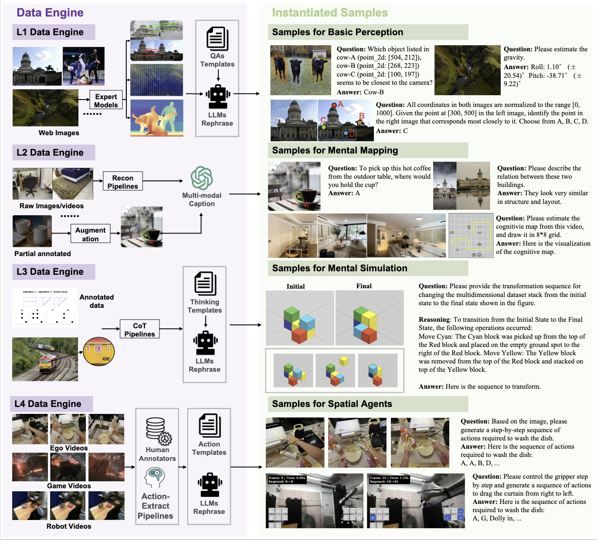
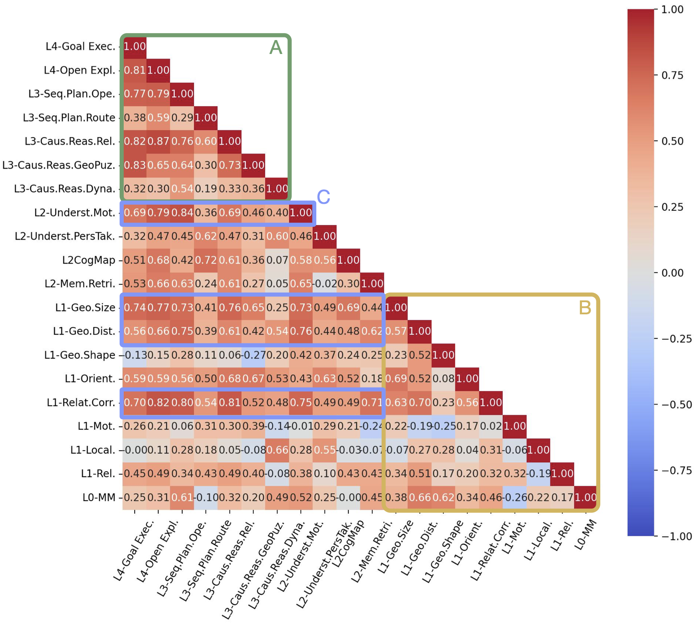
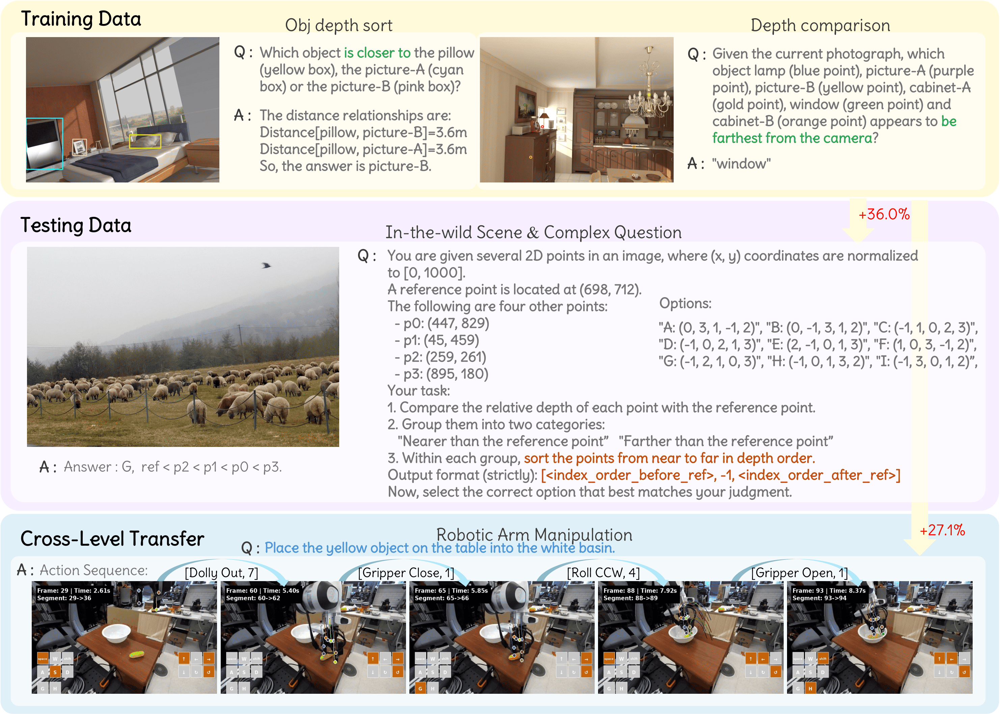

Overview
TL;DR
We propose SpatialTree, a cognitive-science-inspired taxonomy of spatial intelligence in multimodal large language models(MLLMs), along with SpatialTree-Bench and a proof-of-concept study on improving spatial abilities.

Engine&Bench

Ability Study
Cognitive Hierarchy
We design the SpatialTree taxonomy, inspired by cognitive science, to scaffold spatial abilities across four hierarchical levels.
Click a layer to see its focus, representative abilities.
L4 · Agentic Competence
Converts perception + memory into executable behaviors through the Spatial Action Mapping, covering goal execution, open-world exploration, and manipulation.
- Tasks: navigation with 6-DoF camera control, gripper primitives.
- Datasets: SpatialPlus agentic traces, EmbodiedBench, SITEs.
Data Samples
SpatialTree-Bench
SpatialTree-Bench measures 16 closed/open MLLMs across L1–L4 with balanced weighting, revealing orthogonal perception atoms and tightly coupled higher layers.
Closed-source
Open-source
| Model | Avg. | Perception | Mental Mapping | Mental Simulation | Agentic Competence |
|---|---|---|---|---|---|
| Gemini 2.5 Pro | 50.1 | 49.3 | 53.8 | 51.3 | 45.8 |
| Gemini 2.5 Pro NT | 41.4 | 38.8 | 46.9 | 42.4 | 37.6 |
| Qwen3VL-235B | 40.0 | 34.6 | 46.6 | 39.9 | 38.9 |
| Gemini 2.5 Flash | 39.0 | 38.3 | 46.3 | 37.8 | 33.5 |
| GLM4.5V | 36.0 | 35.0 | 34.4 | 36.3 | 38.3 |
| Gemini 2.5 Flash NT | 35.8 | 33.5 | 41.6 | 31.4 | 36.7 |
| Seed1.6-Vision | 35.7 | 36.3 | 36.6 | 35.4 | 34.6 |
| Qwen3VL-30B | 35.3 | 30.2 | 40.9 | 36.7 | 33.4 |
| Qwen 2.5VL-72B | 33.0 | 28.8 | 37.8 | 34.6 | 31.3 |
| GPT-4o | 31.9 | 26.8 | 34.9 | 33.2 | 32.5 |
| Qwen 2.5VL-32B | 27.9 | 24.0 | 26.8 | 34.3 | 26.4 |
| Qwen 2.5VL-7B | 27.5 | 20.9 | 28.9 | 32.4 | 27.8 |
| Kimi-VL-A3B | 24.4 | 20.3 | 25.9 | 27.2 | 24.2 |
Hierarchy insight: L1 abilities are largely orthogonal, while L3 and L4 scores are strongly correlated.
Ability Acquisition
Ability Dependency Analysis
Low-level abilities are largely orthogonal, while high-level abilities are tightly coupled through integration.
Low-level abilities form clear prerequisites that higher-level abilities depend on.
Finding 1
Cross-Ability Transfer: Single-ability L1 SFT induces cross-level transfer, while yielding limited or slightly negative effects on same-level abilities.

Finding 2
Multi-ability Synergy: The holistic integration across multiple fundamental abilities achieves synergistic gains far exceeding their individual effects.
| Methods | Avg. | L1 Perception | L2 Mental Mapping | L3 Mental Simulation | L4 Agentic Competence | |||||||
|---|---|---|---|---|---|---|---|---|---|---|---|---|
| Geom. | Motion | Rel. | Local. | Orient. | Underst. | Memory | Caus. Reas. | Seq. Plan. | Goal Exec. | Open Expl. | ||
| Baseline | 25.0 | 20.9 | 28.6 | 28.9 | 24.2 | 34.2 | 22.6 | 21.7 | 27.2 | 31.7 | 22.1 | 26.5 |
| B+Dist. | 24.5 | 24.1 +3.2 | 26.6 -2.0 | 23.2 -5.8 | 19.6 -4.6 | 34.3 +0.1 | 24.6 +2.0 | 21.8 +0.1 | 26.1 -1.1 | 30.8 -0.9 | 25.5 +3.4 | 26.1 -0.4 |
| B+Corr. | 25.2 | 17.6 -3.2 | 23.9 -4.7 | 30.2 +1.3 | 18.9 -5.3 | 35.6 +1.4 | 21.9 -0.7 | 24.6 +2.9 | 21.8 -5.4 | 33.9 +2.2 | 24.7 +2.6 | 35.9 +9.4 |
| B+Size | 23.5 | 24.3 +3.4 | 22.6 -6.0 | 21.4 -7.5 | 21.7 -2.5 | 34.5 +0.3 | 21.9 -0.8 | 19.2 -2.5 | 23.4 -3.8 | 30.3 -1.5 | 21.5 -0.6 | 24.3 +2.2 |
| B+Dist.+Size+Corr. | 26.1 | 25.5 +4.6 | 29.3 +0.7 | 29.4 +0.5 | 16.4 -7.8 | 33.7 +0.5 | 23.0 +0.4 | 24.2 +2.5 | 25.2 -2.0 | 34.2 +2.5 | 26.0 +3.9 | 28.5 +2.0 |
| B+Dist.+Size+Corr.+Mot. | 27.3 | 28.6 +7.7 | 24.6 -4.0 | 20.6 -8.3 | 26.3 +2.1 | 36.0 +1.8 | 22.2 -0.4 | 22.6 +0.9 | 28.2 +1.0 | 32.8 +1.1 | 23.3 +1.1 | 35.9 +9.4 |
| Baseline+75@(all spat.) | 23.6 | 24.9 +4.0 | 22.6 -6.0 | 25.9 -3.0 | 17.4 -6.8 | 31.2 -3.0 | 22.2 -0.4 | 20.6 -1.1 | 25.7 -1.5 | 30.2 -1.5 | 19.7 -2.4 | 22.8 -3.7 |
SFT Comparisons. "B+Dist.", "B+Corr.", and "B+Size" denote the baseline augmented with distance, correspondence, and size tuning data, respectively. Changes are color-coded as notable gains, neutral influence, and drops.
Finding 3
Auto-Think Strategy: We uncover a trade-off in RL where excessive reasoning hurts intuitive perception. We propose a hierarchy-aware "Auto-think" strategy that suppresses reasoning for low-level sensing while encouraging it for complex planning.
| Methods | Avg. | L1 Perception | L2 Mental Mapping | L3 Mental Simulation | L4 Agentic Competence | |||||||
|---|---|---|---|---|---|---|---|---|---|---|---|---|
| Geom. | Motion | Rel. | Local. | Orient. | Underst. | Memory | Caus. Reas. | Seq. Plan. | Goal Exec. | Open Expl. | ||
| SFT Baseline | 27.3 | 28.6 | 24.6 | 20.6 | 26.3 | 36.0 | 22.2 | 22.6 | 28.2 | 32.8 | 23.3 | 35.9 |
| L1 RL@think | 26.6 -0.7 | 28.4 +0.9 | 30.0 +5.4 | 30.5 +9.9 | 19.5 -6.8 | 34.5 -1.4 | 24.9 +2.8 | 18.5 -4.1 | 25.7 -2.4 | 34.0 +1.1 | 24.1 +0.8 | 29.6 -6.3 |
| L2 RL@think | 26.7 -0.5 | 24.4 -4.1 | 22.7 -1.9 | 22.3 +1.6 | 17.0 -9.4 | 35.0 -0.9 | 26.6 +4.5 | 16.1 -6.5 | 29.0 +0.8 | 31.4 -1.4 | 25.6 +2.3 | 34.5 -1.4 |
| L3 RL@think | 27.7 +0.4 | 16.2 -12.3 | 24.0 -0.6 | 24.1 +3.5 | 21.4 -4.9 | 38.5 +2.5 | 26.0 +3.9 | 21.8 -0.8 | 31.3 +3.1 | 34.7 +1.9 | 26.5 +3.2 | 38.4 +2.5 |
| L4 RL@think | 28.5 +1.2 | 23.8 -4.8 | 25.3 +0.7 | 22.1 +1.4 | 23.5 -2.8 | 33.9 -2.1 | 25.1 +3.0 | 20.5 -2.2 | 32.0 +3.8 | 34.2 +1.4 | 27.1 +3.9 | 38.8 +2.9 |
| Full RL@think | 30.1 +2.9 | 29.7 +1.1 | 24.7 +0.1 | 27.2 +6.5 | 21.0 -5.3 | 34.8 -1.2 | 27.4 +5.2 | 16.7 -5.9 | 33.6 +5.5 | 37.6 +4.8 | 25.4 +2.1 | 41.7 +5.8 |
| Full RL@auto-think | 30.8 +3.6 | 31.9 +3.3 | 28.6 +4.0 | 22.0 +1.3 | 23.1 -3.2 | 36.8 +0.8 | 28.0 +5.8 | 22.6 -0.1 | 33.5 +5.4 | 35.6 +2.8 | 23.4 +0.1 | 44.1 +8.3 |
RLVR Comparisons. The table compares the SFT baseline with versions enhanced by RL on different tasks. Changes are color-coded as notable gains, neutral influence, and drops.
Citation
If you find our project helpful to your research, you can cite us with:
@article{spatialtree2025,
title={SpatialTree: How Spatial Abilities Branch Out in MLLMs},
author={Xiao, Yuxi and Li, Longfei and Yan, Shen and Liu, Xinhang and Peng, Sida and Wei, Yunchao and Zhou, Xiaowei and Kang, Bingyi},
journal={arXiv preprint},
year={2025}
}